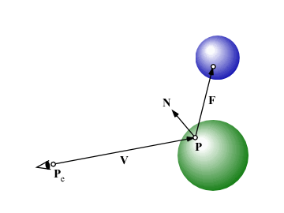

個々の物体に映り込みの反射率 Kr を与えて，これが 0 でないものは，周囲の物体が映り込むようにしてください． Kr は，構造体 Material の要素に r を追加し， この構造体の変数のそれぞれの要素に格納するものとします．
struct Material {
float a[3]; /* 環境光に対する反射係数 Ka */
float d[3]; /* 物体表面の拡散反射係数 Kd */
float s[3]; /* 物体表面の鏡面反射係数 Ks */
float e; /* ハイライトの広がり */
float r; /* 映り込みの反射率 */
};
struct Material red = {
{ 0.5, 0.1, 0.1 },
{ 0.5, 0.1, 0.1 },
{ 0.4, 0.4, 0.4 },
40.0,
1.0,
};
struct Material green = {
{ 0.1, 0.5, 0.1 },
{ 0.1, 0.5, 0.1 },
{ 0.4, 0.4, 0.4 },
40.0,
1.0,
};
struct Material blue = {
{ 0.1, 0.1, 0.5 },
{ 0.1, 0.1, 0.5 },
{ 0.4, 0.4, 0.4 },
40.0,
1.0,
};
現在の可視点 P における視線ベクトル V の反射ベクトル F を求めます．

そして P を新たな視点，F を新たな視線に用いて，この視線と交差する物体を求め， その点の陰影を計算して，現在の可視点における陰影と合成します．
映り込みを起こす物体が複数あると， それらの間で繰り返して反射が起こり， 計算が終わらなくなることがあります． そこで，反射の回数の上限を指定して， 一定回数反射したら処理を打ち切るようにしてください．